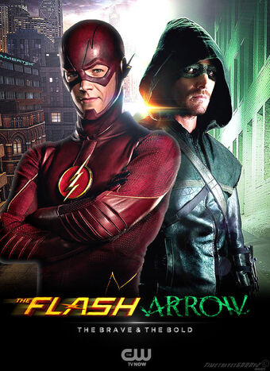
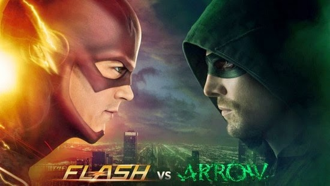
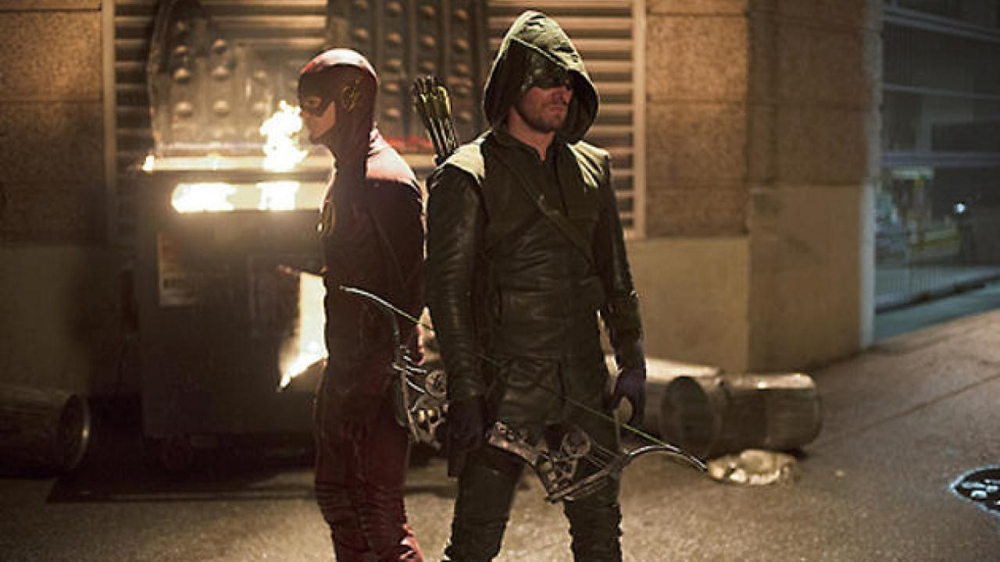
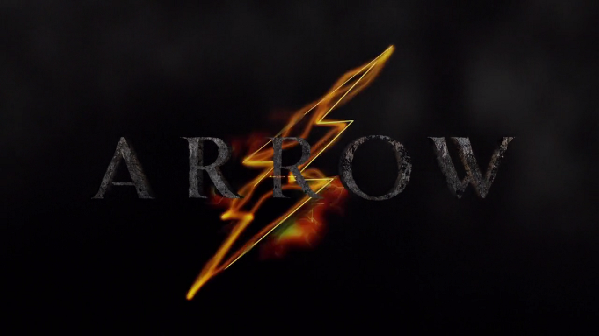
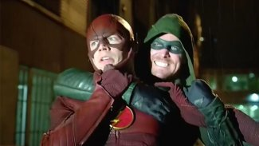

Flash vs. Arrow is the name of the first annual Arrowverse crossover event between The Flash and Arrow. The crossover aired over two nights from December 2 to December 3, 2014.
| Serie | Episode No. | Episode Title | Original Air Date | |
|---|---|---|---|---|
| Part 1 | The Flash | Season 1Epsiode 8 | "Flash vs. Arrow" | December 2, 2014 |
| Part 2 | Arrow | Season 3Epsiode 8 | "The Brave and the Bold" | December 3, 2014 |

Part 1 - Barry is thrilled when Oliver, Felicity and Diggle come to Central City to investigate a case involving a deadly boomerang. Excited about teaming up with his friend, Barry asks Oliver if he'd like to help him stop Roy Bivolo, the meta-human Barry is currently tracking. Bivolo causes people to lose control of their emotions and has been using that skill to rob banks. Unfortunately, the superhero partnership doesn't go as smoothly as Barry expected. When Oliver tells Barry he still has a lot to learn, Barry sets out to prove him wrong by attempting to stop Bivolo alone. However, when Bivolo infects Barry and sets him on a rage rampage, everyone is in danger, and the only one who can stop him is the Arrow. Meanwhile, Iris is furious when Eddie tries to get a task force to stop the Flash. Joe and Dr. Wells agree the Arrow is a bad influence on Barry and Caitlin and Cisco deal with a new team in S.T.A.R. Labs.
Part 2 - Oliver, Roy, and Diggle track down the location of a boomerang-wielding killer named Digger Harkness but are surprised when they come face to face with an A.R.G.U.S. team. Diggle asks Lyla why A.R.G.U.S. is involved but she defers until Harkness attacks the building, killing several agents and targeting Lyla. The Arrow joins the fight and gets help from an old friend – the Flash. Harkness manages to get away and Oliver teams up with Barry again to find him before he can get to Lyla. When Harkness plants five bombs in the city that are timed to explode at the same time, both teams must come together to save the city.
 
Roy Bivolo, a metahuman with the power to send people into an uncontrollable rage, uses his powers to rob the Central City bank. Police detective Eddie Thawne proposes to capture the Flash because he was at the crime scene, but is rejected by the captain. The police track Bivolo to a warehouse, where he uses his powers on a cop to facilitate his escape. Barry Allen arrives to save Joe West, but is almost injured himself before Oliver Queen, as the "Arrow" vigilante, arrives to stop the cop. Later, Oliver informs Barry that he and his team are in Central City tracking down intel on a killer who uses lethal steel boomerangs. Barry and his friends suggests that they team-up to catch each other's targets and Oliver reluctantly agrees. Oliver tries to teach Barry to be more mindful of his surroundings, but Barry decides to go after Bivolo by himself. Bivolo uses his ability on Barry's mind; but because of Barry's speed, its effects last longer. Eddie continues to persuade his superiors to form a task force unit to capture the Flash, expressing his zero tolerance for vigilantes. When an enraged Barry, as the Flash, attacks Eddie, Oliver tries to stop Barry, and the two engage in a fight. Oliver manages to wrangle Barry long enough for Harrison Wells and Joe to use strobe light to reset Barry's emotional state. Afterward, Barry and Oliver capture Bivolo and place him in the pipeline prison at S.T.A.R. Labs. Due to the incident, Eddie forms a task unit to arrest the Flash. Barry confirms Oliver's belief that the former has still a lot to learn. Oliver advises him to stay away from Iris West, with whom Barry is in love, for a while, because men with secret identities as vigilantes never get the girl. Oliver asks Team Flash to keep his alter ego as the Arrow, a secret. A new mysterious metahuman able to manipulate fire appears in Central City. In a flashback set in Hong Kong, Oliver learns how to torture suspects to gain information. In the present, Oliver and Roy Harper locate Digger Harkness, the boomerang-wielding killer, where they find A.R.G.U.S. operatives looking for him as well. Caitlin Snow and Cisco Ramon arrive in Starling City to help Felicity Smoak investigate Sara Lance's homicidal murderer. Digger attempts to kill Lyla Michaels, Roy, and Oliver, but Barry instantly arrives and stops him. Later, Lyla reveals that Digger was part of the Suicide Squad. When Oliver uses his extreme interrogation methods on a Russian mob member in order to locate Digger, Barry questions how emotionally stable Oliver is with his past tragedies to torture people. Digger locates Oliver's base and wounds Lyla before escaping immediately. In order to leave town, Digger plants five bombs around the city. While Oliver captures Digger, Barry uses both of their teams to defuse the bombs simultaneously. Digger is incarcerated on Lian Yu with Slade Wilson. Before Barry and his team's departure to Central City, Cisco and Caitlin gives Oliver his suit improvements and utilities, him and Oliver learned both of their lessons and decide to have a friendly duel.
 